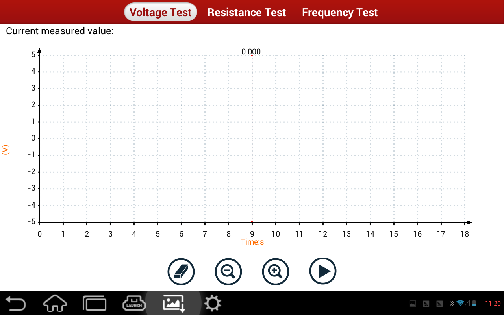

[Previous Page:Test Page]
After accessing the main page of multimeter, it displays:
|  |
Click the above function module switch, you can switch to the corresponding voltage test, resistance test, the frequency of the test module interface.
After connecting the device, click [Start] button to start test. Function buttons as below:
[Clear]: Clear wave form displayed on test page.
[Zoom Out]: Zoom out the display of wave form.
[Zoom In]: Zoom in the display of wave form.
[Start]: Start the test.